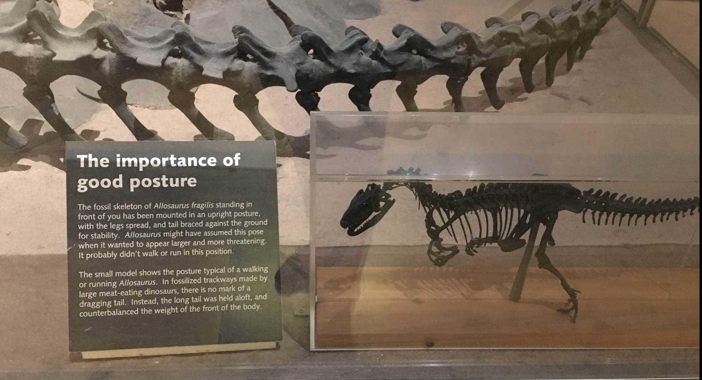
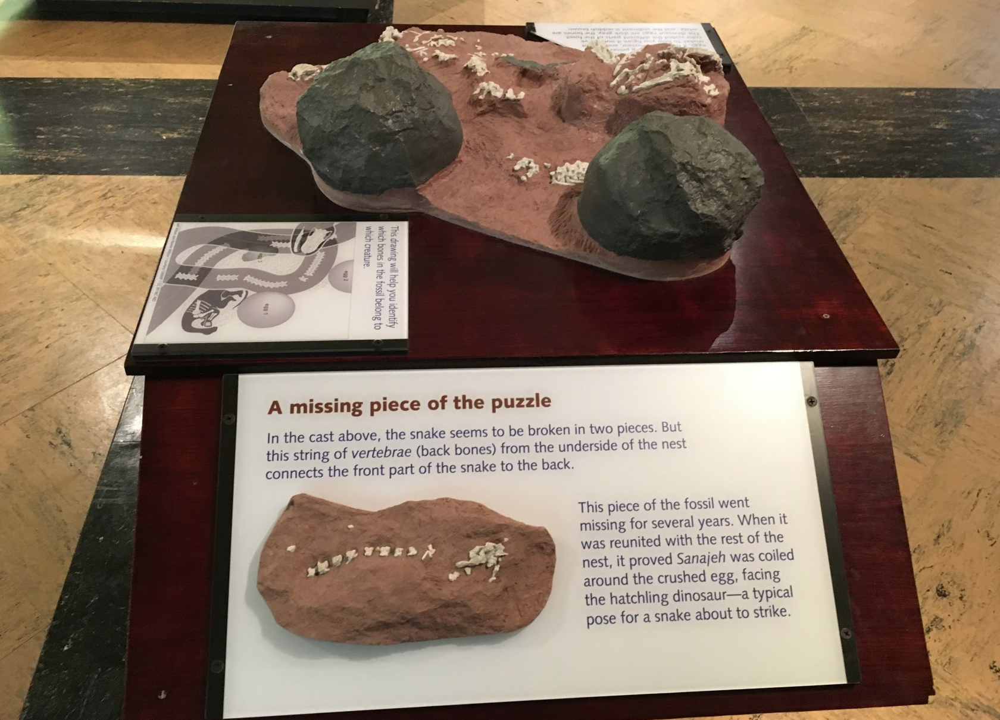
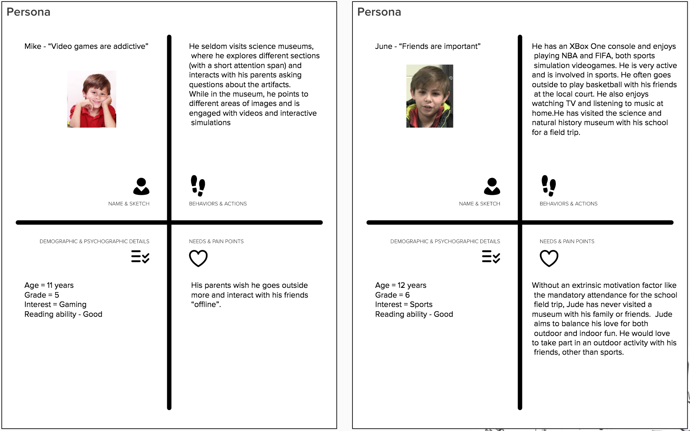
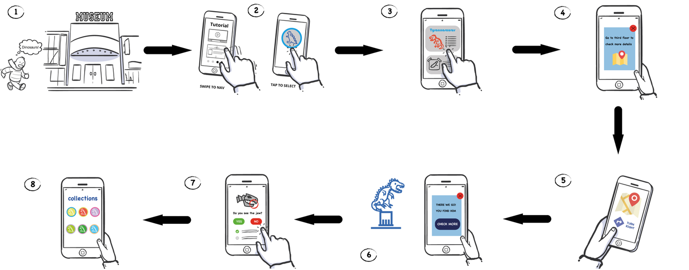

Software Design for Learning: Interactive App for museum
As technology is changing rapidly, it has become difficult for the kids of next generation to engage with the museums. In this project, we explore how we can ensure that technology acts as an enhancer of experience rather than a mere distraction. This project was part of class Software Design for Learning at School of Information. We incorporated various learning theories to engage kids like Social Constructivism, Behaviorism and Scaffolding. Our process involved defining learning goals, brainstorming, personas, storyboarding and wireframes.
Learning Goals
The primary goal of our application was to ensure that our target learner audience absorbs as much knowledge, offered by the museum, as possible through the use of our application.
The two major types of learning that we imbued within our application are incidental and deliberate learning. It is important to keep in mind that the margin of error and occasional outliers of target learner audience will exist. Both types of learning will be implemented by all the activities and game based experiences that we will be offering via the mobile application. Because our target learner audience is young, we concluded that the least intrusive learning method would serve our purpose best; based on a behavioristic theory of learning, unintrusive teaching method paired with appropriate extrinsic motivations will prove to be highly successful in engaging our target learner audience.
Target Audience
In our design process, we focussed on children within the grades 3rd to 6th as our primary learner audience. We have found that children generally within this grade group are exposed to a field trip to different types museums throughout their school years. We understood that there are other grade level students that do attend field trips to museums; however, because the term “children” is often a loosely used term to describe a very wide set of audience, we decided to focus on a tighter group to best fit “children” from the middle.
Assumptions
We assumed that children who attend the museums are with their classmates and chaperones, on a field trip. In addition, we assumed that these children have previous knowledge on how to use a smartphone with internet access. We didn’t think an extensive knowledge on smartphone usage would be necessary as of now; however, once we develop mini-games and features for our mobile application, we may need more device-specific features to be accessed. Lastly on the students, we are assuming that their group of classmates would possess at least a few smartphones to be shared amongst the group.
Observations at the Museum
Most of the content in the museum related to real life concepts like posture but they were unable to communicate that information effectively to the kids.
Some of the content in the museum consisted of a “missing puzzle” piece. For example, this piece of information talks about why this piece of fossil was missing for several years.
Interaction of the kids with the artifacts
We did a general observation in the museum of few families with kids. Parents were involved in guiding them or telling an information about the artifact. Kids of age 10-12 were just reading and pointing to the images. This behavior served as baseline for the interaction design in the later stages.
Personas
After visiting the museum several times, we came up with personas for the kids in the museum.
User Scenarios
We used principles of shallow interaction design to facilitate our primary interaction between the mobile application and the user (kid). By following a basic “Tap-View-Close” model for interaction, we were able to design our user flow. This helped us redirect the attention of kid towards museum object rather than getting lost in the application itself. When the kid reached near the museum artifact, a simple notification would appear in the mobile application containing an instruction for the kid (for instance, to observe the eyes of the dinosaur). Gradually, other instructions would also appear as the kid completes each task or prompt. By engaging the kid with micro-interactions like this, we hope to enhance the learning experience of the kid in the museum.
